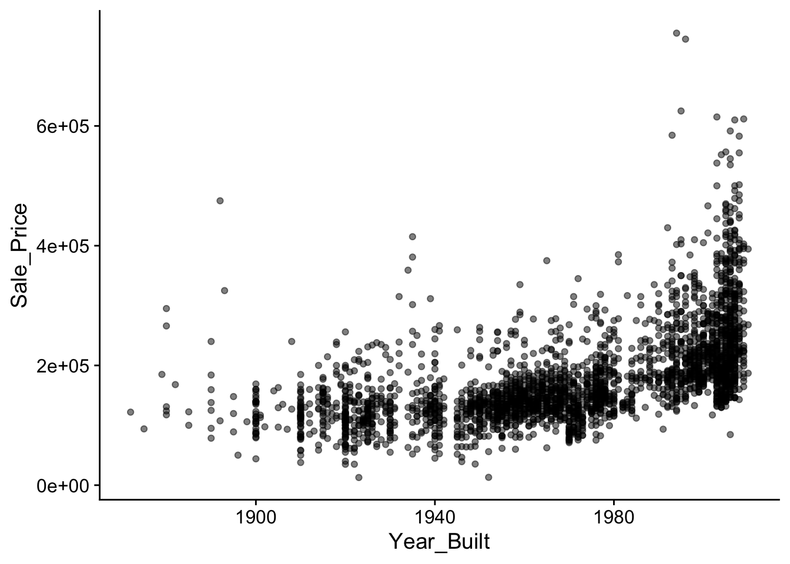

13 Machine Learning
13.1 Neuronale Netzwerke lernen funktionale Zusammenhänge
Neuronale Netze sind leistungsstarke Modelle, die darauf spezialisiert sind, komplexe Muster in Daten zu erkennen und Vorhersagen zu treffen. Allerdings können sie keine direkten kausalen Schlüsse ziehen. Diese Unfähigkeit ist eine wesentliche Einschränkung, insbesondere in Kontexten, in denen kausale Zusammenhänge wichtig sind.
Ein zentraler Punkt ist der Unterschied zwischen Korrelation und Kausalität. Neuronale Netze sind hervorragend darin, Korrelationen zwischen Variablen zu erkennen, aber eine Korrelation bedeutet nicht zwangsläufig, dass eine kausale Beziehung besteht. Kausalität erfordert, dass eine Veränderung in einer Variablen tatsächlich eine Veränderung in einer anderen verursacht. Neuronale Netze verfügen jedoch nicht über Mechanismen, um Kausalität direkt zu modellieren oder zu erkennen.
Ein weiteres Problem ist die fehlende Berücksichtigung von Störfaktoren (Confoundern). Diese sind Variablen, die sowohl die Ursache als auch die Wirkung beeinflussen können. Neuronale Netze übersehen oder missinterpretieren oft solche Störfaktoren, was zu falschen Schlussfolgerungen führen kann. Da sie auf historischen Daten basieren, können sie auch keine Interventionsanalysen durchführen, die für kausale Schlüsse notwendig sind.
Die „Black-Box“-Natur von neuronalen Netzen stellt ein weiteres Hindernis dar. Es ist oft schwer nachvollziehbar, wie das Modell zu seinen Vorhersagen gelangt, was die Interpretation und das Verständnis von kausalen Beziehungen erschwert.
Zusammengefasst sind Neuronale Netze zwar mächtige Werkzeuge zur Mustererkennung, aber sie sind nicht geeignet, um kausale Zusammenhänge zu erkennen oder zu verifizieren. Für kausale Inferenz sind spezialisierte Methoden erforderlich, die über das hinausgehen, was neuronale Netze leisten können.
Input: Die Eingangsdaten oder Merkmale, die in das neuronale Netzwerk eingespeist werden. Jeder Input wird durch ein oder mehrere Neuronen in der Eingabeschicht repräsentiert.
Output: Das Ergebnis, das das neuronale Netzwerk nach der Verarbeitung der Inputs liefert. Der Output wird durch die Neuronen in der Ausgabeschicht des Netzwerks dargestellt.
Layer: Eine Ebene von Neuronen im neuronalen Netzwerk. Es gibt Eingabeschichten, versteckte Schichten (Hidden Layers) und Ausgabeschichten. Jede Schicht nimmt Eingaben, verarbeitet sie und gibt Ausgaben an die nächste Schicht weiter.
Units: Die Neuronen in einem Layer. Jedes Neuron empfängt Inputs, multipliziert sie mit Gewichten, addiert einen Bias und gibt das Ergebnis nach Anwendung einer Aktivierungsfunktion weiter.
Aktivierungsfunktion: Eine mathematische Funktion, die auf die gewichtete Summe der Eingaben eines Neurons angewendet wird. Sie bestimmt, ob ein Neuron aktiviert wird. Beispiele sind Sigmoid, ReLU und Tanh.
Neuronale Netze lernen, indem sie ihre internen Parameter (Gewichte) so anpassen, dass der Fehler zwischen den vorhergesagten und den tatsächlichen Werten minimiert wird. Dieser Lernprozess basiert auf einem Optimierungsverfahren namens Gradientenabstieg. Hier ist, wie das Lernen im Wesentlichen funktioniert:
Forward Pass: Ein neuronales Netz nimmt Eingabedaten auf und leitet diese durch die Schichten des Netzes weiter. Jede Schicht transformiert die Daten mit Hilfe von Gewichten und Aktivierungsfunktionen, um eine Vorhersage zu erzeugen.
Berechnung des Loss: Der Fehler (Loss) wird berechnet, indem die Vorhersage mit dem tatsächlichen Wert verglichen wird. Typische Fehlerfunktionen sind der quadratische Fehler oder der Kreuzentropieverlust.
Gradientenabstieg: Um die Gewichte anzupassen und den Fehler zu minimieren, berechnet der Gradientenabstieg (Gradient Descent) den Gradienten der Loss-Funktion in Bezug auf die Gewichte. Der Gradientenabstieg zeigt an, in welche Richtung die Gewichte verändert werden müssen, um den Fehler zu verringern.
Gewichtsaktualisierung: Die Gewichte werden in kleinen Schritten, die durch die Lernrate bestimmt werden, in Richtung des negativen Gradienten angepasst. Dies bedeutet, dass die Gewichte so verändert werden, dass der Fehler nach der nächsten Vorhersage kleiner ist.
Erweiterte Optimierung (z.B. Adam): Um den Lernprozess effizienter und stabiler zu machen, verwenden moderne Algorithmen wie Adam zusätzliche Techniken. Adam kombiniert den Gradientenabstieg mit Momentum, um die Anpassung der Gewichte zu beschleunigen und stabile Lernschritte zu gewährleisten, sowie mit adaptiven Lernraten, die die Schrittgröße für jedes Gewicht individuell anpassen.
Iterativer Prozess: Dieser Prozess des Vorwärtsdurchlaufs, der Fehlerberechnung, der Gradientenberechnung und der Gewichtsaktualisierung wird für viele Iterationen wiederholt, bis der Fehler ausreichend klein ist oder keine signifikanten Verbesserungen mehr erzielt werden.
Durch diesen iterativen Lernprozess passen neuronale Netze ihre Gewichte so an, dass sie komplexe Muster in den Daten erkennen und genaue Vorhersagen machen können.
13.2 Neuronale Netze
\[\begin{align*} Y = w_1 X + b \end{align*}\]
model <- keras_model_sequential() %>%
layer_dense(
units = 1,
input_shape = 1,
activation = 'linear'
)# kompilieren
model %>% compile(
optimizer = optimizer_adam(learning_rate = 0.01),
loss = 'mean_absolute_error'
)
Call:
lm(formula = y ~ x)
Residuals:
Min 1Q Median 3Q Max
-2.8431 -0.7007 0.0136 0.6558 3.4072
Coefficients:
Estimate Std. Error t value Pr(>|t|)
(Intercept) 5.04094 0.06333 79.6 <2e-16 ***
x 2.99417 0.01103 271.6 <2e-16 ***
---
Signif. codes: 0 '***' 0.001 '**' 0.01 '*' 0.05 '.' 0.1 ' ' 1
Residual standard error: 1.002 on 998 degrees of freedom
Multiple R-squared: 0.9866, Adjusted R-squared: 0.9866
F-statistic: 7.374e+04 on 1 and 998 DF, p-value: < 2.2e-16# Koeffizienten der linearen Regression
coef(lm_model)(Intercept) x
5.040943 2.994166 # Gewichtung und Bias des neuronalen Netzwerks
weights <- model %>% get_weights()
weights[[1]] # Gewichtung [,1]
[1,] 2.98694weights[[2]] # Bias[1] 5.08939613.2.1 Multiple
# Erstellen und Kompilieren des Modells
model <- keras_model_sequential() %>%
layer_dense(
units = 1,
input_shape = k,
activation = 'linear'
)
model %>% compile(
loss = 'mean_squared_error',
optimizer = optimizer_sgd(learning_rate = 0.01)
)
# Training des Modells
model %>% fit(
x = X,
y = Y,
epochs = 100,
verbose = 0
)# Gewichte und Bias extrahieren
weights <- model %>% get_weights()
weights[[1]] # Gewicht für jede Variablen [,1]
[1,] 2.976843
[2,] 1.938688
[3,] -1.472110weights[[2]] # Bias-Term[1] 5.016342
Call:
lm(formula = Y ~ X)
Residuals:
Min 1Q Median 3Q Max
-3.3129 -0.7286 0.0900 0.7439 3.4086
Coefficients:
Estimate Std. Error t value Pr(>|t|)
(Intercept) 5.01583 0.06843 73.30 <2e-16 ***
X1 2.97449 0.07028 42.32 <2e-16 ***
X2 1.94345 0.07061 27.52 <2e-16 ***
X3 -1.47278 0.06914 -21.30 <2e-16 ***
---
Signif. codes: 0 '***' 0.001 '**' 0.01 '*' 0.05 '.' 0.1 ' ' 1
Residual standard error: 1.079 on 246 degrees of freedom
Multiple R-squared: 0.9271, Adjusted R-squared: 0.9262
F-statistic: 1042 on 3 and 246 DF, p-value: < 2.2e-1613.3 Logistisch
# Erstellen von Trainingsdaten
set.seed(42)
n <- 500
X <- rnorm(n = n, mean = 5, sd = 2) # Regressor
P <- pnorm(-4 + 0.7 * X)
Y <- as.integer(runif(n) < P)# Erstellen und Kompilieren des Modells
model <- keras_model_sequential() %>%
layer_dense(units = 1, input_shape = 1, activation = 'sigmoid')
model %>% compile(
loss = 'binary_crossentropy',
optimizer = optimizer_adam(learning_rate = 0.01),
metrics = c('accuracy')
)
# Training des Modells
model %>%
fit(X, Y, epochs = 200, verbose = 0)
# Gewichte und Bias extrahieren
weights <- model %>%
get_weights()
w <- weights[[1]] # Gewicht für jede der 5 Variablen
bias <- weights[[2]] # Bias-Term
# Ergebnisse anzeigen
print(w) [,1]
[1,] 1.283091print(bias)[1] -7.232894
Call: glm(formula = Y ~ X, family = binomial(link = "logit"))
Coefficients:
(Intercept) X
-8.572 1.527
Degrees of Freedom: 499 Total (i.e. Null); 498 Residual
Null Deviance: 663.1
Residual Deviance: 347.1 AIC: 351.116/16 - 0s - 69ms/epoch - 4ms/step# In einen DataFrame zusammenfassen
results <- data.frame(
Regressor = X,
Actual = Y,
Predicted_Probability = predictions
)library(ggplot2)
# Plot der tatsächlichen Werte gegen die vorhergesagten Wahrscheinlichkeiten
ggplot(
data = results,
mapping = aes(x = X, y = Actual)
) +
geom_point(
position = position_jitter(height = 0.05),
alpha = 0.5) +
geom_line(
mapping = aes(y = Predicted_Probability),
col = "darkred"
) +
geom_smooth(
method = "glm",
method.args = list(family = "binomial"),
se = FALSE
) +
labs(
title = "Logistische Regression vs. NN",
x = "x",
y = "Schätzung P(Y=1|X=x)"
) +
theme_minimal()
13.4 Gradientenabstiegsverfahren
Das Gradientenabstiegsverfahren (Gradient Descent) ist ein iteratives Optimierungsverfahren zur Minimierung einer differenzierbaren Zielfunktion \(f(x)\). Es wird häufig eingesetzt, um die Verlustfunktionen in maschinellen Lernmodellen zu minimieren. Der Algorithmus aktualisiert die Variablen schrittweise in die entgegengesetzte Richtung des Gradienten der Funktion an der aktuellen Position. Der Gradient gibt dabei die Richtung des steilsten Anstiegs an, wodurch die entgegengesetzte Richtung zum schnellsten Abstieg (Descent) führt.
Der folgende Pseudocode zeigt die grundlegende Vorgehensweise des Gradientenabstiegsverfahrens unter Einbeziehung eines Momentum-Terms, der dazu dient, das Konvergenzverhalten zu verbessern und lokale Minima effektiver zu überwinden.
\[\begin{align*} & \textbf{Algorithmus: Gradientenabstiegsverfahren mit Momentum} \\ & \textup{Initialisiere: }\\ & \quad x_0 \text{ (Startpunkt) }\\ & \quad \eta \text{ (Lernrate) }\\ & \quad \alpha \text{ (Momentum-Faktor) }\\ & \quad v_0 = 0 \text{ (Anfangsmomentum) } \\[1em] & \text{Für } t = 0, 1, 2, \dots \text{ bis Konvergenz} \\ & \quad \text{1. Berechne den Gradienten: } \nabla f(x_t) \\ & \quad \text{2. Aktualisiere den Momentum-Term: } v_{t+1} = \alpha v_t - \eta \nabla f(x_t) \\ & \quad \text{3. Aktualisiere die Position: } x_{t+1} = x_t + v_{t+1} \\ & \quad \text{4. Überprüfe das Abbruchkriterium (z.B. } \| \nabla f(x_t) \| < \epsilon\text{)} \\ \end{align*}\]
13.5 Case Study: Immobilienpreise
library(AmesHousing)
housing <- make_ames()# Load the necessary libraries
library(ggplot2)
library(sf)
library(tigris)
# Retrieve basemap for Ames, Iowa using the tigris package
places_map <- places(
state = 'IA',
cb = TRUE,
progress = F
) %>%
st_as_sf()
# Filter for Ames city
ames_map <- places_map %>%
filter(NAME == "Ames")
houses <- housing %>%
select(Latitude, Longitude, Sale_Price) %>%
mutate(
Sale_Price = cut(log(Sale_Price, base = 2), breaks = 5, labels = FALSE)
) %>%
st_as_sf(coords = c("Longitude", "Latitude"),
crs = 4326, agr = "constant")
rainbow_colors <- rainbow(5, rev = TRUE)# Plot the map with just the outline of Ames
ggplot() +
geom_sf(data = ames_map, color = "black", fill = alpha("black", alpha = 0)) +
geom_sf(data = houses, mapping = aes(color = factor(Sale_Price)), size = .2) +
theme_map() +
scale_color_manual(
name = "log(Verkaufspreis)",
values = rainbow_colors,
labels = levels(factor(houses$Sale_Price))
) +
theme(legend.position = "bottom", legend.direction = "horizontal") +
ggtitle("Verkaufte Häuser in Ames, Iowa")
housing %>%
ggplot(mapping = aes(x = Year_Built, y = Sale_Price)) +
geom_point(alpha = .5) +
theme_cowplot()